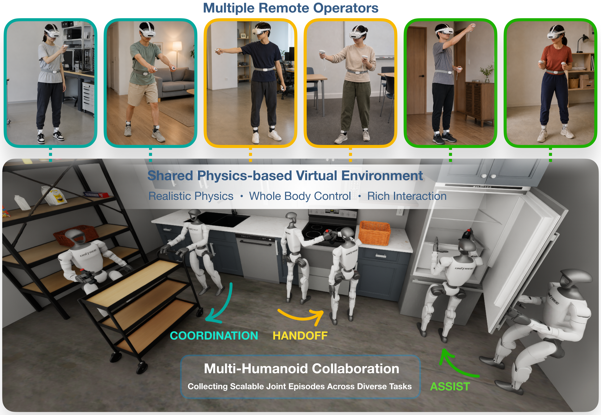
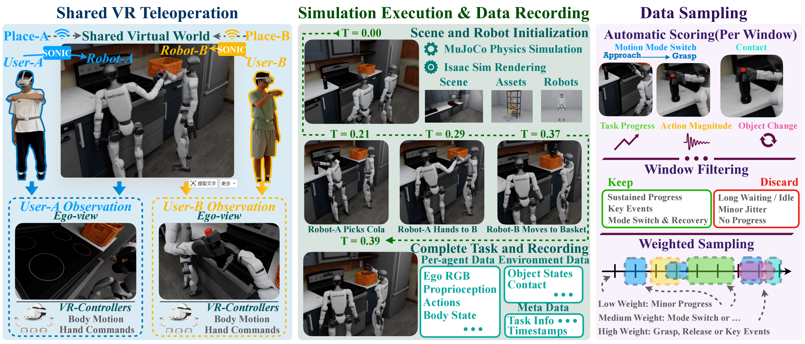
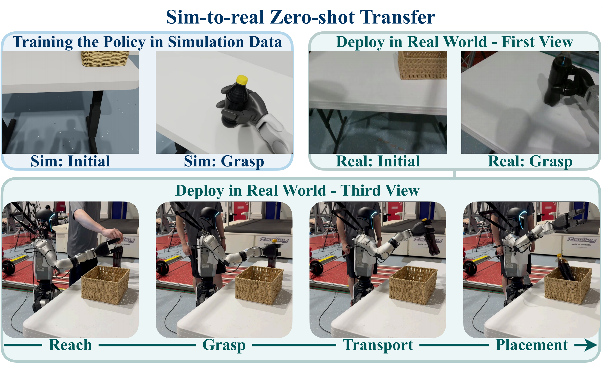

Coke in Refrigerator
One humanoid holds the refrigerator open while the other places the coke inside.
MATE
1 ShanghaiTech University2 Nanyang Technological University* Corresponding authors

ABSTRACT
Humanoid robots require diverse embodied experiences to acquire complex loco-manipulation and collaborative skills. MATE is a multi-agent virtual teleoperation platform that enables multiple geographically distributed operators to simultaneously control whole-body humanoids in a shared physics-based environment.
We construct a multi-humanoid collaboration dataset comprising 24.1 hours of coordinated behavior across 2,500 joint episodes and five long-horizon tasks. We further introduce Execution-Aligned Interaction Sampling (EAIS), which prioritizes task-progressing and interaction-critical behaviors. Experiments with imitation learning and vision-language-action policies demonstrate effective policy learning and zero-shot transfer from virtual demonstrations to a physical humanoid without real-world fine-tuning.
FULL DEMO
DATA COLLECTION
Each operator controls one humanoid through an independent interface. All agents, objects, and contacts evolve together in simulation, producing synchronized joint trajectories rather than isolated single-agent recordings.

DATASET TASKS
One humanoid holds the refrigerator open while the other places the coke inside.
Two humanoids coordinate a direct transfer of the bottle.
Intermediate placement, acquisition, and final delivery are shared across agents.
One humanoid positions the cart while the other transports and places the bottle.
One humanoid holds the door while the other pushes the bed through.
COLLECTION EFFICIENCY
On the same Bottle Relay procedure, MATE reduces amortized collection time per successful episode from about 89 seconds to about 41 seconds under the reported protocol.
POLICY ROLLOUTS
Policy-controlled coordination over an extended horizon.
The learned receiver responds to the partner’s handoff.
Long-horizon navigation and physical coordination.
Coordination through intermediate placement and final delivery.
Long-horizon transport and cooperative placement.
EXECUTION-ALIGNED INTERACTION SAMPLING
ROLLOUT COMPARISON
SIM-TO-REAL
Demonstrations collected in the shared virtual environment transfer to a physical humanoid without additional real-world training data.

MATE
More resources will be released with the paper.
Back to top ↑